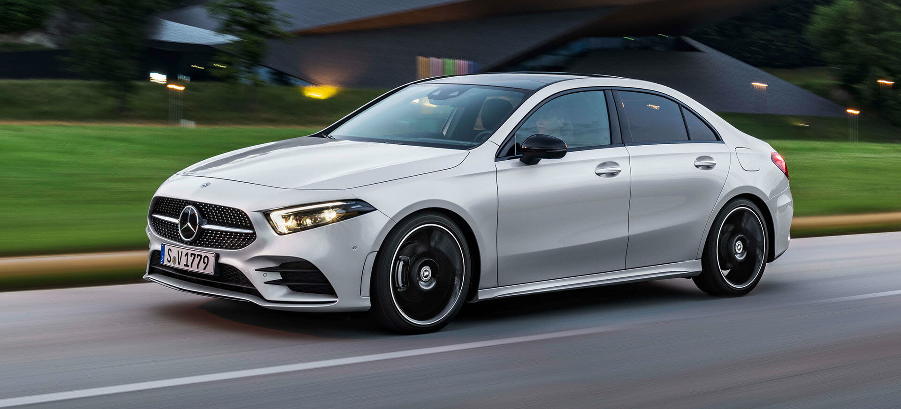
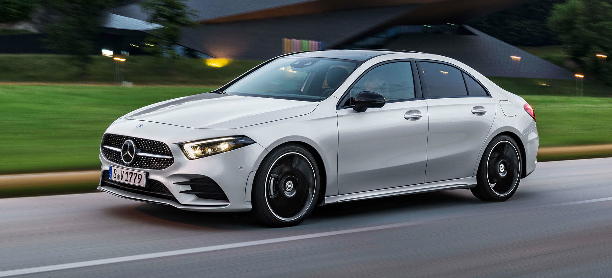

Mercedes Benz Clase A
El clase A posee tracción delantera, equipado con un motor 4 cilindros en línea, ofrecemos la versión Hatchback A250, con un motor 1.3, el cual entrega 211 hp. Tenemos la versión A35, con un motor 2.0 que ofrece 306 hp. Además ofrecemos la versión A250 sedán, que posee el mismo motor que el A250 hatchback. Mostramos las versiones en las siguentes imagenes, respectivamente.
 

Mercedes Benz Clase C
Con lo que respecta al clase C, ofrecemos las versiones C300 AMG sedán y coupé, las cuales poseen un motor de 4 cilindros en línea naftero 2.0 L con turbocompresor, que entrega una potencia de 258 CV a 5800 rpm y un torque de 400 Nm entre 2000 y 3200 rpm, combinado con la caja automática 9G-Tronic de 9 marchas. También ofrecemos una de las versiones más potentes de este segmento, el C 63S, equipado con un motor de 4 cilindros en línea, el cual entrega hasta casi 680 hp, un verdadero monstruo, capaz de acelerar de 0 a 100 km/h en 3,4 segundos.
Mercedes Benz Clase S
Ofrecemos el nuevo Clase S, el sedán más lujoso de Mercedes Benz. Utiliza un motor de 6 cilindros en línea, con turbo, capaz de rendir 435 caballos y 520 Nm de torque. Esto le permite alcanzar los 250 km/h de velocidad máxima, y alcanzar los 100 km/h en tan solo 4,9 segundos. Claramente se destaca por su seguridad y confortabilidad interior.